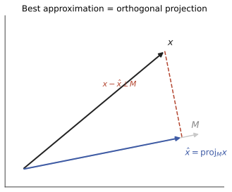

本页目录
泛函 II · Hilbert 空间
Banach 空间只有长度，Hilbert 空间还有角度——内积带来正交、投影、最佳逼近的全套欧氏几何，且在无穷维完好运转。本页三大件：投影定理、正交基与 Fourier 展开、Riesz 表示定理。高代 VI 的内积空间一页是它的有限维预告片；条件期望、最小二乘、Fourier 级数在此获得统一的几何身份。
学习层：先猜投影的账，再让有限模型揭晓
1. 具体谜题：斜着给出的子空间，最近点是谁？
把 \(H=mathbb R^3\) 配上标准内积，取
这里的两个生成向量并不正交，所以“把坐标各自截掉”不是投影算法。先猜三件事：
- \(P_Mx\) 是否会同时满足 \(x-P_Mx\perp u_1,u_2\)？
- \(|x\|^2\) 是否等于 \(|P_Mx\|^2+|x-P_Mx\|^2\)？
- 对 \(u_1,u_2\) 做 Gram–Schmidt 后，投影系数是否只是把 \(x\) 与新的正交单位向量做内积？
2. 可审计的有限模型：Gram–Schmidt 把“最近”变成逐项记账
在有限维空间里，任意线性子空间都是闭的；因此这里确实有唯一的最近点。对生成元逐项正交化，得到 \(q_1,q_2\) 后：
本例中
于是 \(langle r,u_1\rangle=langle r,u_2\rangle=0\)，并且 \(14=\|x\|^2=\|P_Mx\|^2+\|r\|^2=2+12\)。这不是“图上看起来最近”：正交性给出 Pythagoras 身份，闭性保证极限仍留在子空间中。
3. Riesz 读法与有限截断
在同一个有限 Hilbert 空间里，任意线性泛函都能写成 \(\varphi_y(v)=\langle v,y\rangle\)；例如 \(y=(1,-2,1)\) 时，\(\varphi_y(x)=7\)。这就是 Riesz 表示的可计算版本：泛函的全部信息由一个代表向量 \(y\) 记账，而不是凭空多出一个对象。
若把 \(\ell^2\) 或 \(L^2\) 暂时截成前 \(k\) 个正交方向，得到的仍是一个有限维闭子空间。对 \(x=(2,-1,3)\) 沿标准基的前缀投影，\(k=1,2,3\) 的残差平方范数分别为 \(10,9,0\)。最后一个 \(0\) 来自这组基在 \(\mathbb R^3\) 中完备；在真正的无穷维空间里，有限截断只是一列近似，只有正交系张成稠密子空间时才有 \(P_{M_k}x\to x\)。若子空间不闭，投影定理不能直接保证最近点存在。
4. 动手实验：先选判断，再揭示投影账本
选择一个有限模型并回答三个判断。揭示前只保留你的选择，不显示投影向量、残差或误差分解；揭示后再看 Gram–Schmidt 基、系数、正交性和 Pythagoras 的逐项数值。所有数字都由同一个有限向量模型直接计算。
无 JavaScript 时的静态读法：标准模型取 \(x=(2,-1,3)\)。斜平面例中 \(M=\operatorname{span}\{(1,1,0),(0,1,1)\}\)，正交化基为 \(q_1=(1,1,0)/\sqrt2\)、\(q_2=(-1,1,2)/\sqrt6\)。
| 有限模型 | \(P_Mx\) | 残差 \(r\) | \(\|x\|^2\) | \(\|P_Mx\|^2+\|r\|^2\) | \(\max_j|\langle r,q_j\rangle|\) | |---|---|---|---:|---:|---:| | 斜平面（两生成元） | \((0,1,1)\) | \((2,-2,2)\) | \(14\) | \(2+12=14\) | \(0\) | | 直线 \(\operatorname{span}\{(1,1,0)\}\) | \((1/2,1/2,0)\) | \((3/2,-3/2,3)\) | \(14\) | \(1/2+27/2=14\) | \(0\) | | 截断平面 \(\operatorname{span}\{e_1,e_2\}\) | \((2,-1,0)\) | \((0,0,3)\) | \(14\) | \(5+9=14\) | \(0\) | | 完整基 \(\mathbb R^3\) | \((2,-1,3)\) | \((0,0,0)\) | \(14\) | \(14+0=14\) | \(0\) |
有限维的“闭”只说明最近点存在，不说明有限个基向量已经描述了某个无穷维对象；表中完整基的 \(0\) 残差是本三维模型的完备性结论，不是对任意截断 Fourier 级数的自动保证。有限 \(\mathbb R^3\) 截断只能演示投影恒等式，不能替代闭子空间假设或无限维正交系完备性的证明。
5. 边界提醒：模型揭示了什么，不能替代什么？
- 这里的投影是在带标准内积的 \(\mathbb R^3\) 中精确完成的；它是 Hilbert 投影定理的有限维可审计切片，不是数值误差分析或一般闭凸集算法，也不能替代闭子空间或无限维完备性证明。
- “有限截断误差变小”需要嵌套子空间、正交结构和完备性等条件；Bessel 不等式本身只给能量不增加，不能单独推出残差趋于零。
- Riesz 表示要求连续线性泛函；在 Hilbert 空间中连续性与有界性等价。把任意形式上的求值都当成连续泛函，会越过 RKHS 的边界条件。
1. 内积空间与两条身份判据
定义 内积 \(\langle\cdot,\cdot\rangle\)（线性、共轭对称、正定）⇒ 范数 \(\|x\| = \sqrt{\langle x,x\rangle}\)；完备者称 Hilbert 空间。主角：\(\ell^2\)、\(L^2\)（实变 III——\(p = 2\) 独享内积的原因见下）。
Cauchy–Schwarz：\(|\langle x, y\rangle| \leq \|x\|\|y\|\)（全站第四次出场，正式的抽象版）。
平行四边形法则：\(\|x+y\|^2 + \|x-y\|^2 = 2\|x\|^2 + 2\|y\|^2\)——范数来自内积的充要判据（不满足即无缘内积：\(L^p (p \neq 2)\)、\(C[a,b]\) 全被此式排除——"\(L^2\) 特殊"有了一行证明）。
2. 投影定理（Hilbert 几何的顶梁柱）

定理（最佳逼近 + 正交分解） \(M\) 是 Hilbert 空间 \(H\) 的闭子空间，则任意 \(x \in H\) 存在唯一分解
且 \(P_M x\) 是 \(M\) 中距 \(x\) 最近的点（\(\|x - P_M x\| = \min_{m \in M}\|x - m\|\)）。
证明思路：取距离最小化序列，平行四边形法则逼出它是 Cauchy 列（凸性 + 中点技巧），完备性给极限；垂直性由变分法一阶条件（扰动 \(P_Mx + tm\) 求导置零）。\(\blacksquare\)
一网打尽的应用（同一定理的四张面孔）：
| 场景 | \(H\) | \(M\) | \(P_M x\) |
|---|---|---|---|
| 最小二乘（高代/统计 V） | \(\mathbb{R}^n\) | \(X\) 的列空间 | \(\hat y = X\hat\beta\) |
| 条件期望（概率 IV） | \(L^2(\Omega)\) | \(\sigma(X)\)-可测函数 | \(E[Y \mid X]\)——"最佳预测=投影"的正式身份 |
| Fourier 部分和（数分 IV） | \(L^2[-\pi,\pi]\) | 前 \(n\) 个三角函数张成 | 部分和 \(S_n f\)（最佳均方逼近） |
| 正则化/约束优化 | — | 约束集（闭凸推广） | 投影算子（近端方法的原型） |
3. 正交基与 Fourier 展开
标准正交系 \(\{e_n\}\)；Bessel 不等式 \(\sum|\langle x, e_n\rangle|^2 \leq \|x\|^2\)（部分和是投影，投影不长）。完全（=正交基）时升级为等式：
定理（正交基的等价刻画） 以下等价：1. \(\{e_n\}\) 完全（张成稠密）；2. 展开式 \(x = \sum \langle x, e_n\rangle e_n\) 对一切 \(x\) 成立；3. Parseval 等式 \(\|x\|^2 = \sum|\langle x, e_n\rangle|^2\)。
后果（可分 Hilbert 空间的大一统）：一切可分无穷维 Hilbert 空间同构于 \(\ell^2\)——坐标映射 \(x \mapsto (\langle x, e_n\rangle)\) 保内积。"本质上只有一个 Hilbert 空间"：\(L^2\) 的函数、\(\ell^2\) 的序列、量子态空间，同一个抽象对象的不同穿着（高代 IV"同构=换记号"哲学的无穷维加冕）。Fourier 级数理论至此收官定调：三角系是 \(L^2\) 的一组正交基，Fourier 展开就是无穷维坐标表示（数分 IV 的全部收敛纠结，在 \(L^2\) 视角下是一句话）。
4. Riesz 表示定理
定理 Hilbert 空间上任一连续线性泛函 \(\varphi\) 必可表示为与某唯一向量的内积：
（思路：\(\ker\varphi\) 是闭超平面，投影定理取其正交补的方向向量。）读法：Hilbert 空间的对偶就是自己（自对偶）——"测量"与"向量"同一。应用射程：量子力学 bra-ket 记号的数学许可、PDE 弱解存在性（Lax–Milgram 定理是其变体）、以及——
🔗 RKHS 与核方法（ai 课 02 的欠条）：再生核 Hilbert 空间 = "求值泛函 \(f \mapsto f(x)\) 连续"的函数 Hilbert 空间；Riesz 表示给出再生核 \(K(x, \cdot)\) 使 \(f(x) = \langle f, K(x,\cdot)\rangle\)——Mercer 定理构造的特征空间正是 RKHS，SVM 的核技巧在泛函分析里有正式户口；表示定理（解落在样本核函数张成的子空间）就是投影定理的应用。
5. 典型例题
例 1（投影实算） 在 \(L^2[0,1]\) 中求 \(f = x^2\) 到 \(M = \mathrm{span}\{1, x\}\) 的投影。 解：设 \(P f = a + bx\)，正交条件 \(\langle f - Pf, 1\rangle = \langle f - Pf, x\rangle = 0\) 给方程组：\(a + \frac b2 = \frac13\)，\(\frac a2 + \frac b3 = \frac14\) ⇒ \(a = -\frac16, b = 1\)。\(Pf = x - \frac16\)——这同时是"用直线拟合 \(x^2\)"的最小二乘解（统计 V 的连续版）。
例 2（Parseval 反用） \(x\) 的 Fourier 系数平方和（实变 III 例 3 已演示 Basel 和）——正交基的等式 3 是"算级数和"的秘密武器。
例 3（平行四边形排除法） 证 \(C[0,1]\) 配 \(\|\cdot\|_\infty\) 非内积空间：取 \(f = 1, g = x\)，\(\|f+g\|^2 + \|f-g\|^2 = 4 + 1 = 5 \neq 2(1 + 1) = 4\)。一票否决。\(\blacksquare\)
最后一页：研究空间之间的映射——有界线性算子与泛函分析三大定理，无穷维线性代数的完成式。